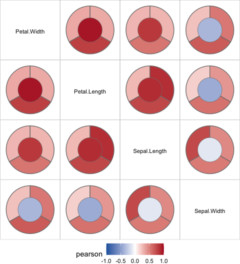
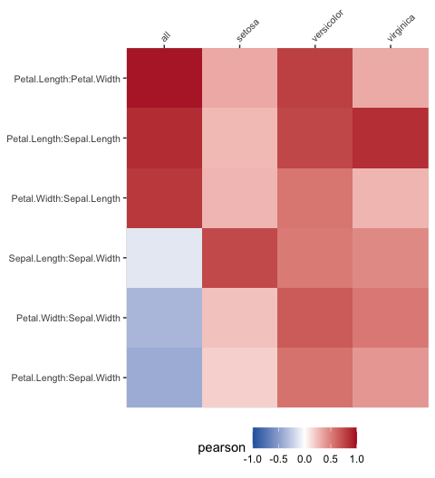

The goal of bullseye is to provide a tidy data structure and visualisations for multiple or grouped variable correlations, general association measures and other pairwise scores suitable for numerical, ordinal and nominal variables.
Installation
You can install the development version of bullseye from GitHub with:
# still in progress
# install.packages("devtools")
# devtools::install_github("cbhurley/bullseye")Build a pairwise data structure
library(bullseye)
irisc <- pairwise_scores(iris, by = "Species")
irisc
#> # A tibble: 24 × 6
#> x y score group value pair_type
#> <chr> <chr> <chr> <fct> <dbl> <chr>
#> 1 Petal.Length Sepal.Length pearson setosa 0.267 nn
#> 2 Petal.Width Sepal.Length pearson setosa 0.278 nn
#> 3 Sepal.Length Sepal.Width pearson setosa 0.743 nn
#> 4 Petal.Length Sepal.Width pearson setosa 0.178 nn
#> 5 Petal.Width Sepal.Width pearson setosa 0.233 nn
#> 6 Petal.Length Petal.Width pearson setosa 0.332 nn
#> 7 Petal.Length Sepal.Length pearson versicolor 0.754 nn
#> 8 Petal.Width Sepal.Length pearson versicolor 0.546 nn
#> 9 Sepal.Length Sepal.Width pearson versicolor 0.526 nn
#> 10 Petal.Length Sepal.Width pearson versicolor 0.561 nn
#> # ℹ 14 more rowsThis calculates correlations for every level of species in the data.
For other methods for calculating pairwise variable scores see the vignette “Calculating pairwise scores using bullseye”.
Visualise the correlations
plot_pairwise(irisc)
The glyph shows the overall or ungrouped correlation in the center, and the grouped correlations in the wedges. These are setosa, versicolor, virginica starting from the top and going anti-clockwise. Use
plot_pairwise(irisc, interactive=TRUE)to see the groups represented by the wedges. The ungrouped Pearson correlation of Sepal.Width with the other three variables is negative, but the correlations for each of the Species is positive.
A second visualisation is offered also:
plot_pairwise_linear(irisc)
For more visualisation examples see the vignette “Visualising pairwise scores using bullseye”.